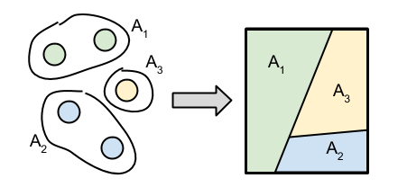

Extending Dirichlet Distribution
From View 2 in the last chapter, we want to expand $\Theta$ to the set of all possible $\theta$'s (that are compatible with $F$).
Recall that $$G(\theta) = \sum_j \pi_j \delta(\theta, \theta_j) = \crab{\pi_j \text{ such that } (\theta = \theta_j)}$$
where $\theta \in \Theta = \set{\theta_1, \dots, \theta_K}$. Observe that $$\nail{G(\theta_1), G(\theta_2), \dots, G(\theta_K)} = (\pi_1, \dots, \pi_K) \sim \Mr{Dir}(\alpha_1, \dots, \alpha_K)$$
Using the agglomeration property of Dirichlet distribution, we get something like $$\nail{G(\set{\theta_1, \theta_2}), \dots, G(\theta_K)} \sim \Mr{Dir}(\alpha_1 + \alpha_2, \dots, \alpha_K)$$
In fact, we can be more general. For any partition $A_1, \dots, A_T$ of $\Theta$, $$\nail{G(A_1), \dots, G(A_T)} \sim \Mr{Dir}(\sum_{A_1}\alpha_i, \dots, \sum_{A_T}\alpha_i)$$
So we are motivated to define:
Definition Let $H$ be a probability distribution on space $\Theta$, and let $\alpha > 0$. A random probability distribution $G$ on $\Theta$ is said to be drawn from a Dirichlet process if for all partitions $A_1, \dots, A_T$ of $\Theta$, $$\nail{G(A_1), \dots, G(A_T)} \sim \Mr{Dir}(\alpha H(A_1), \dots, \alpha H(A_T))$$
Pictorially, we have moved from the discrete space (left) to any space (right).

The definition does not guarantee the existence of such a process. But we have the following theorem.
Theorem For fixed $H$ and $\alpha$, there exists a unique random process satisfying the conditions above.
Therefore, we can unambiguously denote the process as $\Mr{DP}(\alpha, H)$.
We can view $H$ as the mean of the distributions, and $\alpha$ as the dispersion parameter. Indeed, for any $A \subseteq \Theta$, $$\ex{G(A)} = H(A)$$
Posterior Distribution
Let $G \sim \Mr{DP}(\alpha, H)$, and let $A_1, \dots, A_T$ be partitions of $\Theta$. If we draw $\bar{\theta} \sim G$ and $\bar{\theta} \in A_j$, then we can compute the posterior of the Dirichlet distribution: $$(G(A_1), \dots, G(A_T)) \mid\bar{\theta} \sim \Mr{Dir}(\alpha H(A_1), \dots, \alpha H(A_j) + 1, \dots, \alpha H(A_T))$$
As a result, if we draw $N$ samples $\bar{\theta}_1, \dots, \bar{\theta}_N$, we get the posterior distribution $$G \mid (\bar{\theta}_1, \dots, \bar{\theta}_N) \sim \Mr{DP}\nail{\alpha + N, \frac{1}{\alpha + N}\nail{\alpha H + \sum_{i=1}^{N}\delta_{\bar\theta_i}}}$$
For $A \subseteq \Theta$, we get $$\ex{G(A)\midd \bar{\theta}_1, \dots, \bar{\theta}_N} = \frac{1}{\alpha + N}\nail{\alpha H(A) + \sum_{i=1}^N\delta_{\bar\theta_i}(A)}$$
By taking $N\to\infty$, we get $$\lim_{N\to\infty}\ex{G(A)\midd \bar{\theta}_1, \dots, \bar{\theta}_N} = \lim_{N\to\infty}\frac{1}{N}\sum_{i=1}^N\delta_{\bar\theta_i}(A) = \sum_{k=1}^\infty \pi_k\delta_{\theta_k}(A)$$
where $\theta_1, \theta_2, \dots$ are the unique observations, and $\pi_k$ is the empirical frequency of $\theta_k$. This suggests that $G\sim\Mr{DP}(\alpha, H)$ is a discrete measure with probability 1; i.e., the distribution looks like the picture below.